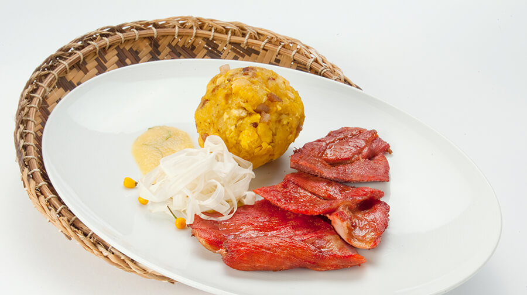

| IMAGEN | INGREDIENTES |
|---|---|
CORDERO AL PALO
|
Comenzamos la lista con un platillo que, si bien surgió en Ayacucho, es uno de los potajes más consumidos en Junín. El secreto del delicioso sabor de este potaje se basa en la cocción y su marinado, basado en ají panca, vinagre, sal, pimienta y comino. El cordero es cocinado a las brasas del fuego por un aproximado de 3 a 4 horas, durante este tiempo, se debe ir rociando el marinado para asegurar que la carne quede jugosa.
|
YACU CHUPE O SOPA VERDE
|
En Junín, las mañanas frías se calman con un buen yacu chupe o sopa verde. Este platillo que nació en el imperio incaico se prepara en base a un caldo de huesos, acompañado de papa, queso, leche y hierbas aromáticas. Se sirve acompañado de cancha serrana.
|
CHICHARRON COLORADO
|
Ir a las diversas provincias de Junín y no probar un chicharrón colorado es considerado pecado. Este platillo es muy consumido en las festividades religiosas de la región; y está basado en aderezo y ají colorado, después se agrega el chicharrón de cerdo y se fríe. Se suele servir acompañado de papa y arroz amarillo (a base de palillo).
|
TACACHO CON CECINA |
Es probablemente el plato más representativo de la selva. Parte de su nombre proviene de la palabra quechua “taka chu”, que significa “machacar”, que es lo que se hace para poder obtener el tacacho o masa a base de plátano; éste una vez frito se aplasta y se sirve junto a la cecina, carne ahumada de cerdo. Acompañan este platillo, chorizo regional (carne molida de cerdo) y ají de cocona.
|